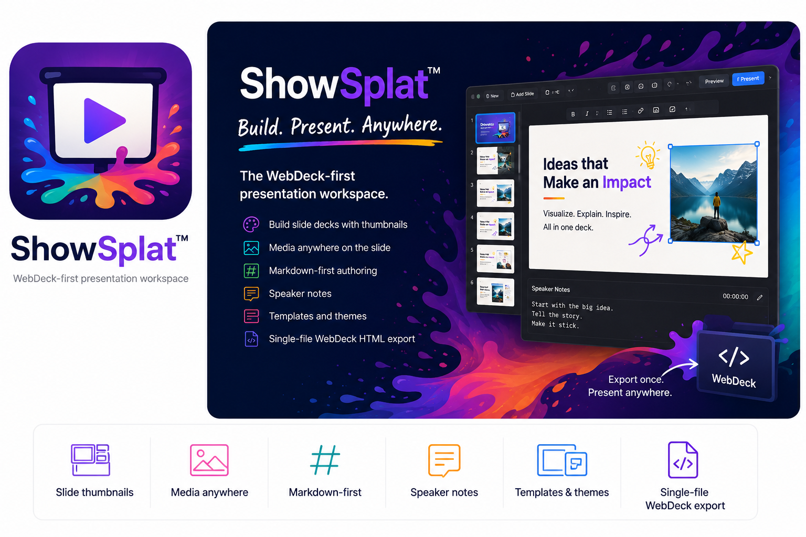

Canvas editor
Use a slide thumbnail rail, central 16:9 canvas, notes panel, menus, toolbar icons, templates, themes, draggable/resizable slide objects, zoom slider, bullet toggle, and selected-box font controls.
SplatWorks™
Build slide decks with thumbnails, a central canvas, editable text and media, Markdown-first authoring, speaker notes, templates, themes, WebDeck v5 HTML, PDF, ODP, and PowerPoint workflows.

Current workspace
ShowSplat keeps WebDeck v5 HTML and Markdown as the cleanest editable paths, while adding first-pass PDF, ODP, and PPTX compatibility for moving existing decks in and out of the browser.
Use a slide thumbnail rail, central 16:9 canvas, notes panel, menus, toolbar icons, templates, themes, draggable/resizable slide objects, zoom slider, bullet toggle, and selected-box font controls.
Insert text, bullet lists, tables, hyperlinks, PNG/JPG/GIF/SVG images, YouTube videos, MP4/WebM video, and audio.
Import WebDeck v5 HTML, Markdown, PDF, ODP, and PPTX. WebDeck and Markdown stay editable; PDF imports as image slides; ODP/PPTX are best-effort editable conversions.
Export WebDeck v5 HTML with notes, navigation, fullscreen, and optional password prompt, plus Markdown, ODP, PPTX, and browser Save-as-PDF output.
Presenter navigation auto-hides after a few seconds and returns on hover. Speaker notes can pop out into a movable window for another display.
The next pass targets stronger PPTX/ODP rendering, editable PDF text extraction, large-deck storage, direct PDF output, table-cell editing, and fixture-based import tests.
Choose a template or create a deck. Add slides, text and media; write speaker notes and preview the presentation. Export WebDeck HTML for a portable presentation, and keep an editable backup before trying converted formats.
Browser storage belongs to this browser and device; it is not a durable backup. Save project files regularly and test reopening them. Installing the district suite makes the app available on your school server; it does not automatically connect every SplatWorks file to whiteboard account-based saving.
SplatWorks overview and installation · Licensing · Download packages
Import and export PowerPoint (.pptx) and OpenDocument Presentation (.odp) files. These are best-effort editable conversions; complex themes, animations, tables, and media may change or be omitted. Keep the original file and an editable ShowSplat backup. WebDeck HTML and Markdown remain available for portable classroom presentations.